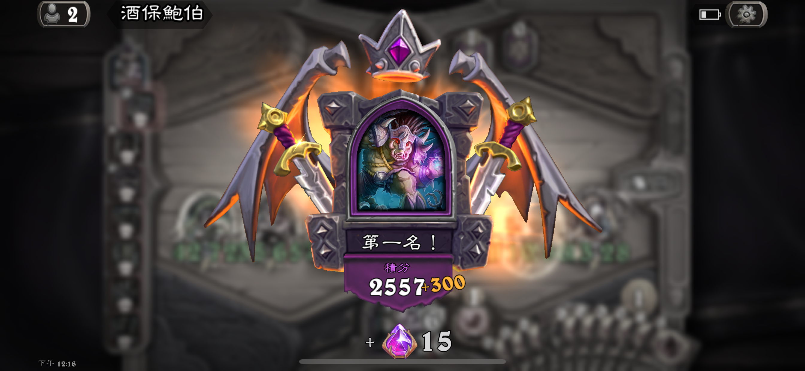
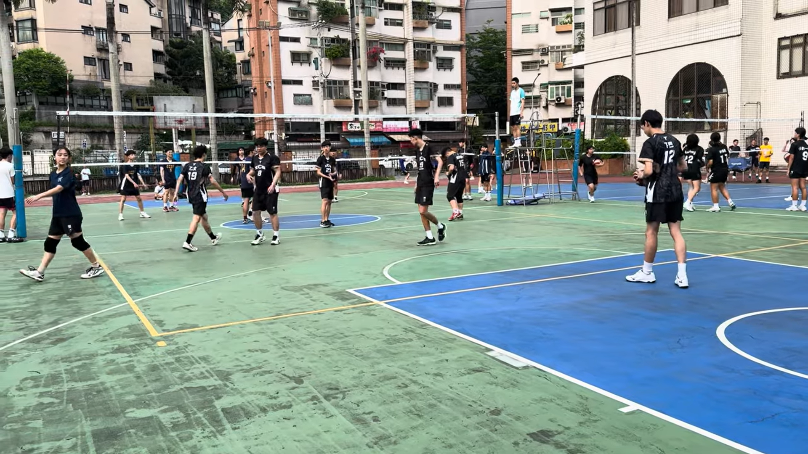

興趣
喜歡打遊戲，像是特戰英豪還有原神，尤其特別喜歡卡牌對決遊戲像是爐石戰紀和暗影詩章。
我最喜歡玩暗影詩章，因為許多日式動漫角色和招式讓我深陷其中，至今已經玩了4年之久

爐石是最近剛開始玩的，雖然還不上手，但我也逐漸了解各種不同卡牌的功能和組合
我也有在嘗試許多不同的運動，例如排球和桌球。尤其我最喜歡打羽毛球。
排球是剛上大學後才開始學的，但是我發現這和羽毛球有些相似之處，像是扣球的姿勢等，希望能在四年裡越來越進步


喜歡打遊戲，像是特戰英豪還有原神，尤其特別喜歡卡牌對決遊戲像是爐石戰紀和暗影詩章。
我也有在嘗試許多不同的運動，例如排球和桌球。尤其我最喜歡打羽毛球。